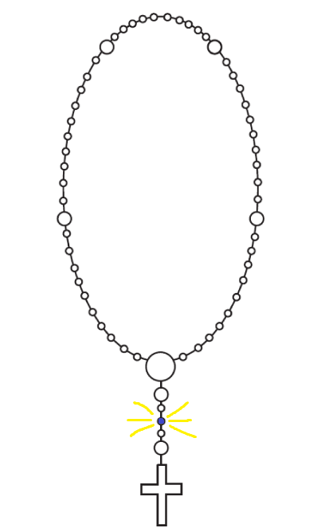

Slavna otajstva - Srijeda
3. zrnce
Zdravo Marijo, milosti puna, Gospodin s tobom! Blagoslovljena ti među ženama i blagoslovljen plod utrobe tvoje Isus,
koji neka nam učvrsti ufanje!
Sveta Marijo, Majko Božja, moli za nas grješnike sada i na čas smrti naše.
Amen.